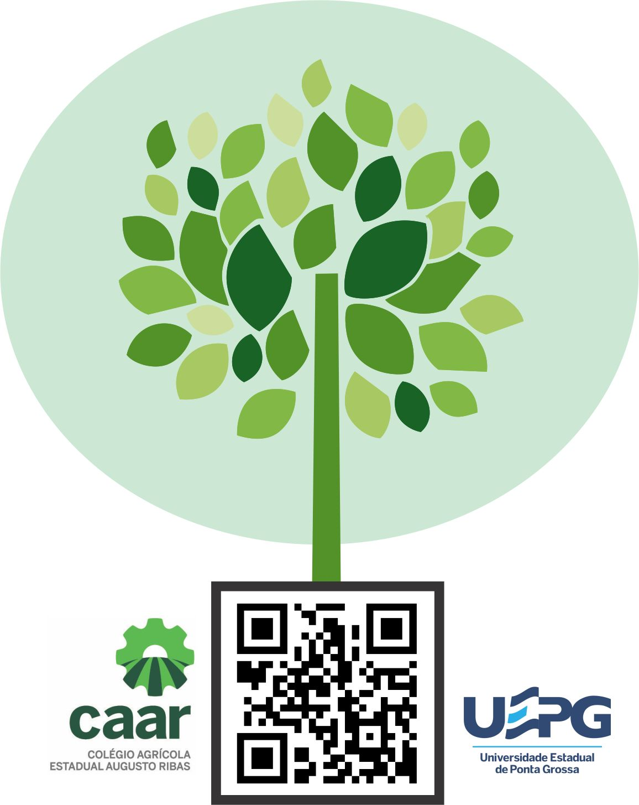

<ion-header>

  <ion-navbar text-center color="verdeMusgo" hideBackButton>
    <ion-title>BioEduca</ion-title>
  </ion-navbar>

</ion-header>

<ion-content padding>

<div>
  <ion-grid>
    <ion-row justify-content-center>
      <ion-col>
        
      </ion-col>

      <ion-footer>
        <ion-toolbar text-center="" class= "botaoPrincipal" [color]="divColor">
          <ion-buttons>
                <button  (tap)="scanCode()" ion-button full outline>
              <ion-label class="textoBotaoPrincipal">Escanear QR Code</ion-label>
              <ion-icon class="iconeBotaoPrincipal" name="qr-scanner" end></ion-icon>
            </button>
          </ion-buttons>
        </ion-toolbar>
      </ion-footer>
    </ion-row>
  </ion-grid>
</div>
</ion-content> 